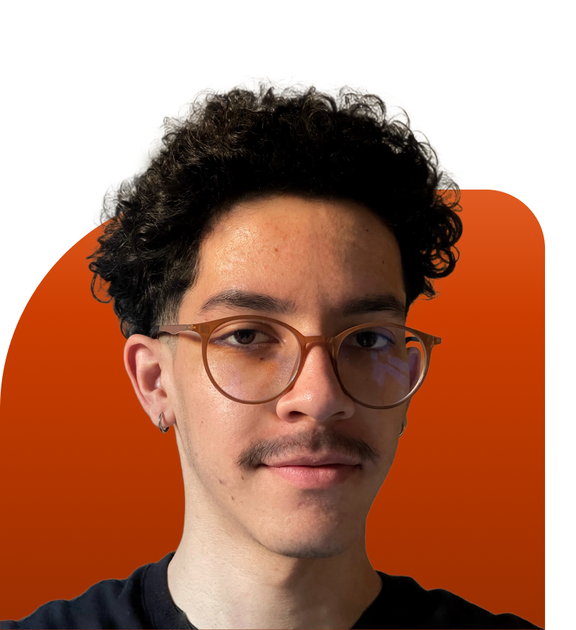
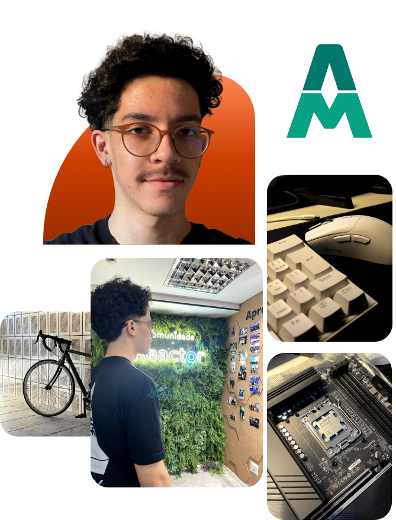

Napbook
Aplicativo focado em ciclos de sono, ajudando os usuários a acordar no momento ideal.
Ver Detalhes © code by Gabriel Santiago
© code by Gabriel Santiago




Aplicativo focado em ciclos de sono, ajudando os usuários a acordar no momento ideal.
Ver Detalhes
Este site foi desenvolvido para exibir minha trajetória e habilidades como programador.
Ver Detalhes👋 Oi! Muito prazer!Sou o Gabriel, uma pessoa curiosa e apaixonada por tecnologia. Acredito que a
curiosidade foi importante no meu aprendizado, e foi ela que me levou a explorar áreas como design e
programação. Dedico meu tempo ao aprendizado contínuo, sempre em busca de aprimorar minhas
habilidades e expandir meus conhecimentos.
Quando não estou estudando, gosto de explorar novos lugares, me manter atualizado sobre as novidades
de hardware e praticar esportes como ciclismo de estrada e academia.
Atualmente, estou no penúltimo semestre de Análise e Desenvolvimento de Sistemas na UAM. Ao longo da
minha jornada acadêmica, tive a oportunidade de explorar diversas áreas de TI, e embora tenho um
amplo conhecimento em design, meu foco profissional está no Front-End, com o objetivo de me tornar
Full-Stack no futuro.
Trabalhei como Designer por 3 anos (2021-2024), onde fui responsável por otimizar a produtividade da
equipe, cuidar de todo o design da empresa — desde fotos de produtos até banners de decoração
virtual das lojas —, além de implementar estratégias de mercado e melhorar os sistemas internos.
Essa experiência foi um divisor de águas para mim, me dando a clareza de qual carreira desejo
seguir. Estou animado para ver onde essa jornada me levará e ansioso para criar experiências
memoráveis tanto para os usuários quanto para aqueles que trabalharem ao meu lado!
